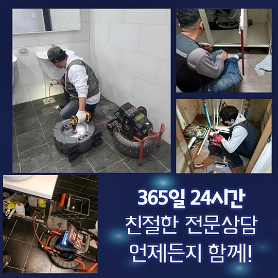
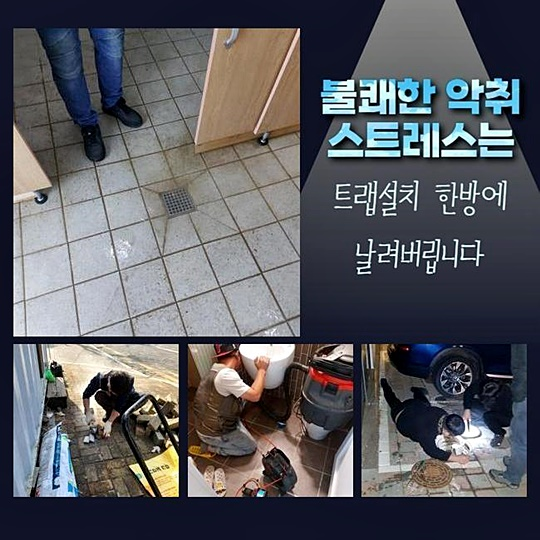
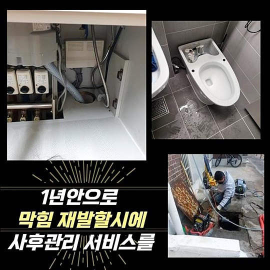
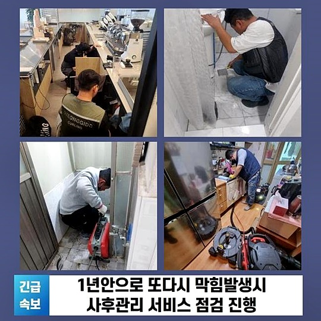
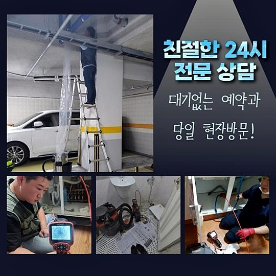
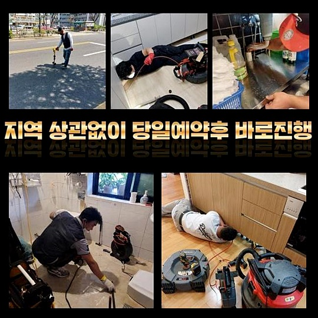
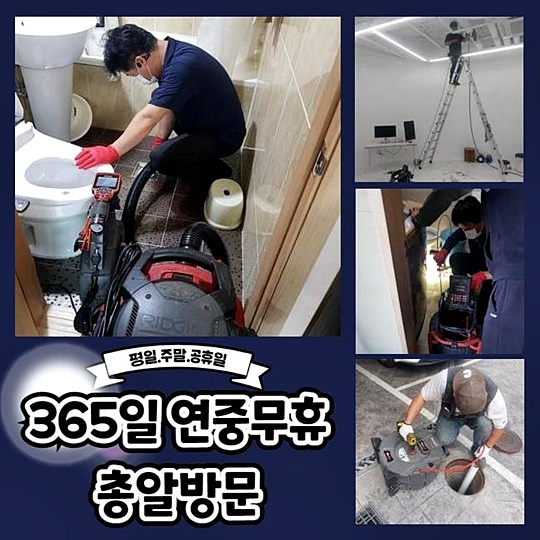

🏠 용산 보광동하수구역류 도원동 집수정청소 설비
용인시 처인구 배관막힘 전문 시공 후기

📋 작업 개요
- 위치: 용인시 처인구, 수원시 영통구, 화성시 동탄
- 서비스 유형: 배관막힘, 고압세척, 내시경점검
- 작업 일시:
- 업체명: 하수구수사대 (010-5615-2118)
🔍 문제 상황
용산 보광동하수구역류 도원동 집수정청소 설비
배관에 이상이 포착되었다면 곧장 처리하는 것이 마땅합니다
하지만 심각한 피해를 발생시키지 않을거란 생각을 갖고 마냥 방치하였다가 손상 영역이 늘어나서야 조급하게 기술자를 수소문하시는 고객님들이 대다수라고 말씀드릴수 있죠
이제 저희측이 수리한 하수관 막힘 세대를 설명드리면서 해당 사태가 발현되었을때 어떠한 생각을 갖고 대처하는게 핵심인지 살뜰하게 안내해드리는 계기가 될수 있게끔 해드릴게요
의뢰인의 예약을 컨펌한뒤 당도한 처소는 15가구가 거하는 나홀로아파트였어요
고객님께서는 작년말부터 배수관으로 탁수가 소멸되는 속력이 점진적으로 하락하였다고 하셨죠
가만히 두면 자연히 없어지리라 간주하고 특별한 생각없이 지내오셨다고 말하셨습니다
그런데 예상과달리 문제상황이 더욱더 악화되어서 동시적으로 다수의 구성원들에게도 타격이 전이되면서 저희에게 급급하게 문의해 주셨죠
건조물의 목적이나 특성과 다른 차원으로 물흐름이 순조롭게 나타나게끔 여러형태의 하수구시설을 매립하는데요
파이프는 사람들이 이용한 액체성분이 퇴거하는 핵심적기능을 담당하고 있는데 단순하게 액체성분만 유입되는게 아니고 여러가지 고형물도 동시에 들어가게 돼요

🔎 원인 분석
💡 전문가 진단: 정밀 진단 장비를 사용하여 슬러지의 고착 여부를 판명하고 타격/세척 작업을 실시했습니다.
해당되는 정황이 연속된다면 관 안쪽에 손상을 만들수 있는 딱딱한 슬러지들이 연속해서 쌓이며 배관의 폐쇄를 발생시키는 겁니다
더군다나 공동관로를 갖춘 곳이라면 곳곳에서 반출되는 다량의 침전물 등이 적체될 여지가 크기 때문에 일상적 관심이 요망된다고 말씀드릴수 있죠
배수문으로 옮겨가는 침전물들은 기름때와 머리카락 등이 대표라 볼 수 있죠
이런 것들은 난용성의 성격을 띠고 있어서 파이프 내측에 적체하는 상황이 벌어지면 단단한 암석처럼 고형화되며 점진적으로 사이즈를 늘려 나가겠죠
이것은 물배출을 막는 부분으로 작동되는 것이고 막힘은 말할것도 없고 급작스러운 역류증세까지 동반생각할수 있답니다
그때 벽쪽에 달라붙은 이물들은 물기와 혼합하여 썩기 시작한다면 배수공으로 고린내가 발생하기도 한답니다
평상시와 달리 설거지를 하다가 탁수가 소멸되는 속력이 감소되었거나 배수문으로 간헐적으로 오취가 감각되는 경우라면 배관 정체가 커졌다는 증거로 간주할수 있습니다
이것을 쉽게 넘기는 것보단 골치아픈 정황으로 받아들이고 바로 최첨단 기기와 실력을 가진 기술자에게 문의해서 상황 체크를 진행해야 마땅합니다
다량의물을 붓는 시도를 하거나 기다란 막대기 등으로 잠시동안 정체를 둔화시킬 가능성은 있지만 본질적인 조치는 되기 힘들다는 것을 설명드려요
고객님의 댁에 도착하고 고장이 발생한 곳으로 가서 표면적인 문제점을 관찰하였는데요
기초적인 배수점검을 수행했음에도 소멸되지 않는 정황을 관찰할 수 있었어요

🔧 작업 과정
또 일부 구간에선 역류증세가 생겨나는 모습도 있었죠
해당되는 케이스에는 관로 깊숙한 지점부터 잔재들이 뭉쳐있을 여지가 충분하므로 계획없이 세척기를 통해 시공을 하기보다는 관안을 살펴볼수 있는 도구를 활용하여 본질적인 부분을 빨리 점검하는게 바람직합니다
내시경촬영기기는 겉에서 볼수 없는 장소까지 돌입하여 뚜렷하게 관의 형상을 파악하게 해주죠
해당 설비와 이어진 브라운관을 지켜보면서 세밀하게 진단하였더니 중앙의 파이프를 기점으로 굴곡진 구간까지 찌꺼기들이 축적된 정황을 발견하였어요
단순한 확인으로도 장기간 관로 세정업무를 안하였다는 사실을 알아차릴수 있었죠
해당하는 형편이 지속된다면 배수관의 크랙이 발현되기도 하므로 추가적인 트러블도 걱정된 것이 사실이예요
역류사태까지 나타났으니 통상적 공구들보다도 고압물세정 방식을 토대로 처리하려는 결단이 옳게 보였답니다
해당 청소법은 견고하게 만들어진 호스줄을 넣어서 관 내부를 높은압력으로 타격하는 시공기법입니다
끈끈해지고 돌처럼 굳은 찌꺼기들도 개운하게 소멸시키는 효력을 보실수 있어요
일년에 한두번 정기적 관리를 실시하신다면 항시 관로를 청결하게 유지케 될 것이며 통수문제에 연유한 우려를 예방할수 있어요
여러명이 주거하는 아파트 등에서 배관장애가 잦게 발현된다면 신뢰할 수 있는 기술자에게 문의하여 일년에 한두번 정기적 관리를 실시하는것이 올바른 대책이 될수 있겠죠
소청업무가 순조롭게 실시되기 위해서는 분쇄기계를 가동하여 관로 내부에 적층된 이물들을 소멸시켜 막힘현상을 약간이라도 처치해내야 해요
플렉스샤프트 장비는 첨단 제품 중 하나로서 무겁지 않다는 강점을 갖고 있기 때문에 여러 목적으로 활용가능하고 스페이서가 포함되어 있어서 관에 스크래치가 안나게 하면서 80% 가량의 침전물을 제거설명드릴수가 있답니다
슬러지를 쇄파하는 일이 종결되면 직전까지 일어난 정체가 해소되는 현상을 포착할 수 있어요
다음은 바깥으로 위치를 변경해서 곧장 물세척공구를 쓰기로 계획했어요
고압물청소 과정에서는 조심해야할 항목이 있습니다


✅ 작업 완료
고속으로 배관에 분사하는 방식인 만큼 관로에 균탁을 생성시킬 여지가 있으므로 상황에 따라 각기 다르게 압을 주어야 된다는 것입니다
저흰 세정을 도모할 시기에는 건축물의 구조도를 빈틈없이 분석하여 종합적인 특성을 제대로 인지하고나서 기계를 작동시킨답니다
관의 사이즈에 따라서 방법을 상이하게 하여서 세정업무를 시행한다면 한참을 축적된 노폐물들을 청결하게 없애낼수 있답니다
배관 고장은 지속적으로 물을 쓰면서 손해 정도가 늘어날수 있기에 약간만이라도 막힘이 나타난 상황이라면 빠르게 대응해 나갈 필요가 있답니다
최첨단 기기와 기술력을 지닌 저희들과 고장을 순조롭게 처치하길 원하신다면 망설이지 말고 신속하게 문의해 주세요




⚠️ 하수구 배관 막힘 예방 및 관리 가이드
- ✅ 머리카락, 비닐, 물티슈 등 물에 분해되지 않는 이물질은 절대 흘려보내지 마세요.
- ✅ 기름기 많은 식기는 설거지 전 키친타올로 먼저 기름때를 닦아내세요.
- ✅ 주기적으로 배수구에 뜨거운 물을 가득 부어주어 유지방 고착을 방지하세요.
- ✅ 작업 후 1년 이내 재발 시 무상 A/S 보증 서비스를 제공합니다.
💡 핵심 정리
- 확실한 장비 작업(내시경 점검 및 샤프트 스케일링)으로 원인을 뿌리 뽑습니다.
- 작업 후 1년 이내에 동일한 부위 재발 시 100% 무상 A/S 서비스를 보장합니다.
- 서울 · 경기 · 인천 전 지역에 24시간 언제든 긴급 출동할 수 있도록 항시 대기 중입니다.
❓ 자주 묻는 질문 (FAQ)
🚨 용인시 처인구 배관막힘 문제로 고민이신가요?
정확한 원인 진단과 확실한 시공으로 재발 없는 해결을 약속드립니다.
24시간 긴급 출동 | 서울 · 경기 · 인천 전지역 | 1년 내 재발 시 무상 A/S